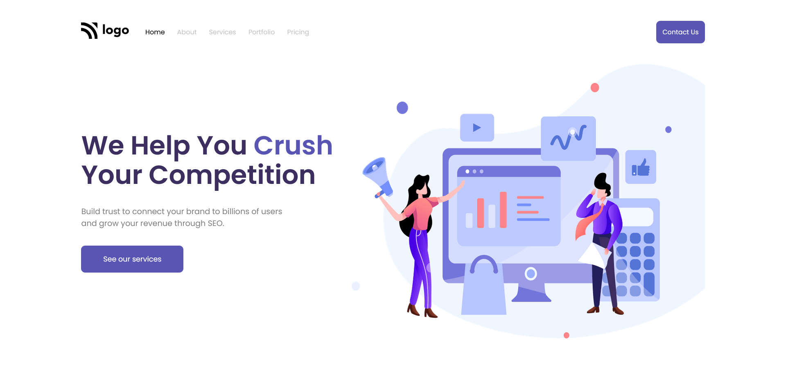

COVID CASES TRACKER
Covid tracker is a site where you can track daily active, new, and recovered cases of covid-19. Built this app with React JS and integrated APIs to retrieve live data and maps to display data geographically.
Tech stack: React JS, HTML, CSS, Context API
SASS PRODUCT LANDING PAGE
Created a landing page mockup design for SASS product using HTML and CSS. Learned CSS layouts and how to use them in production grade applications.
Tech stack: HTML, CSS

NEWS HOME PAGE
Created a landing page mockup design for News website HTML and CSS. Built this site completely with CSS Grid layouts and Flexbox.
Tech stack: HTML, CSS